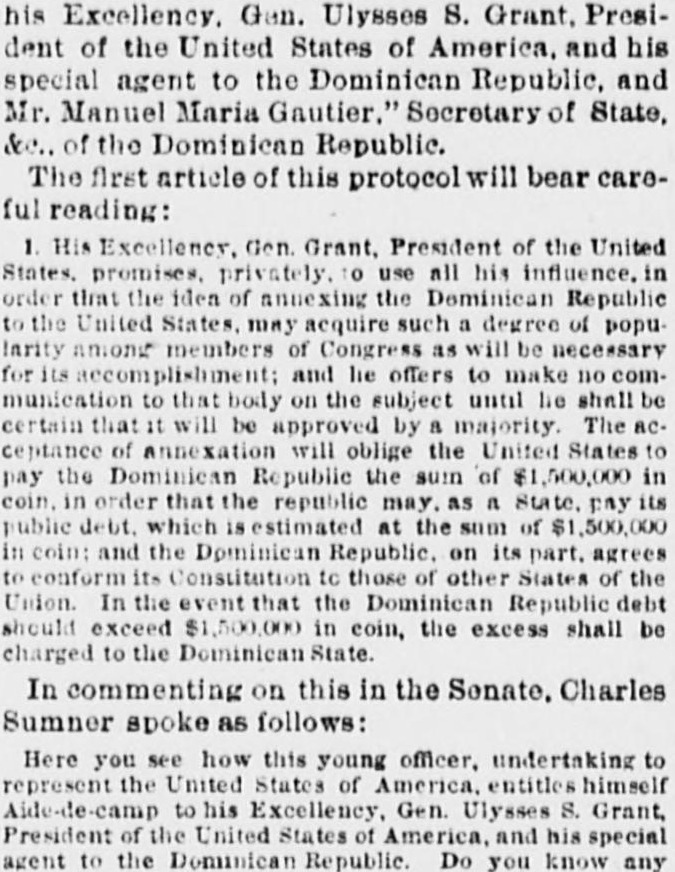

 See the full pageVer la página completa
See the full pageVer la página completa
His Excellency Onn Ulysses 8 Grant Presl di nt ol timeSu Excelencia Don Ulysses S. Grant, Presidente de los
The newspaper reported on a protocol involving U.S. President Ulysses S. Grant and Dominican Republic Secretary of State Manuel Maria Gautier, wherein President Grant would use his influence to secure the annexation of the Dominican Republic by the United States once assured of a majority in Congress. In exchange for the United States paying $1,500,000 in coin to settle the Dominican Republic's debt, the Dominican Republic agreed to reform its constitution to resemble those of other states in the Union. Additionally, the excerpt notes Senate comments by Charles Sumner questioning the authority of an officer acting as an aide-de-camp to President Grant in relation to the Dominican Republic.El rotativo dio cuenta de un protocolo concertado entre el mandatario estadounidense Ulysses S. Grant y el secretario de Estado dominicano Manuel María Gautier, mediante el cual Grant empeñaba su influjo para consumar la anexión de la República Dominicana por los Estados Unidos en cuanto contase con mayoría legislativa en el Capitolio. A cambio del desembolso de 1.500.000 pesos en moneda contante por parte de los Estados Unidos para redimir la deuda dominicana, la República Dominicana se comprometía a reformar su carta magna adaptándola a la de los estados de la Unión. Asimismo, el texto recoge las censuras del senador Charles Sumner impugnando las facultades de un militar que actuaba como edecán de Grant ante el gobierno dominicano.
FULL TEXT:TRADUCCIÓN:
IV.IV.
On the fourth day of September, 1869, the bases of a treaty between the United States and the Dominican Republic were reduced to writing as agreed upon--so runs the official document--"by Gen. Orville E. Babcock, Aide-de-camp to His Excellency, Gen. Ulysses S. Grant, President of the United States of America, and his special agent to the Dominican Republic, and Mr. Manuel Maria Gautier," Secretary of State, &c., of the Dominican Republic.El cuarto día de septiembre de 1869, las bases de un tratado entre los Estados Unidos y la República Dominicana fueron reducidas a escritura según lo acordado—así reza el documento oficial—«por el general Orville E. Babcock, Edecán de Su Excelencia, el general Ulysses S. Grant, Presidente de los Estados Unidos de América, y su agente especial ante la República Dominicana, y el Sr. Manuel Maria Gautier», Secretario de Estado, etc., de la República Dominicana.
The first article of this protocol will bear careful reading:El primer artículo de este protocolo soportará una lectura cuidadosa:
1. His Excellency, Gen. Grant, President of the United States, promises, privately, to use all his influence, in order that the idea of annexing the Dominican Republic to the United States, may acquire such a degree of popularity among members of Congress as will be necessary for its accomplishment; and he offers to make no communication to that body on the subject until he shall be certain that it will be approved by a majority. The acceptance of annexation will oblige the United States to pay the Dominican Republic the sum of $1,500,000 in coin, in order that the republic may, as a State, pay its public debt, which is estimated at the sum of $1,500,000 in coin; and the Dominican Republic, on its part, agrees to conform its Constitution to those of other States of the Union. In the event that the Dominican Republic debt should exceed $1,500,000 in coin, the excess shall be charged to the Dominican State.1. Su Excelencia, el general Grant, Presidente de los Estados Unidos, promete, privadamente, usar toda su influencia, a fin de que la idea de anexar la República Dominicana a los Estados Unidos, adquiera tal grado de popularidad entre los miembros del Congreso como será necesaria para su logro; y ofrece no hacer comunicación alguna a ese cuerpo sobre el asunto hasta que esté seguro de que será aprobado por una mayoría. La aceptación de la anexión obligará a los Estados Unidos a pagar a la República Dominicana la suma de $1,500,000 en moneda, a fin de que la república pueda, como Estado, pagar su deuda pública, que se estima en la suma de $1,500,000 en moneda; y la República Dominicana, por su parte, acuerda conformar su Constitución a las de otros Estados de la Unión. En el evento de que la deuda de la República Dominicana exceda de $1,500,000 en moneda, el exceso será cargado al Estado dominicano.
In commenting on this in the Senate, Charles Sumner spoke as follows:Al comentar sobre esto en el Senado, Charles Sumner habló como sigue:
Here you see how this young officer, undertaking to represent the United States of America, entitles himself Aide-de-camp to His Excellency, Gen. Ulysses S. Grant, President of the United States of America, and his special agent to the Dominican Republic. Do you know any such officer in our Government as Aide-de-camp to his Excellency, the President of the United States? Does his name appear in the Constitution, in any statute, in the history of this republic anywhere? If it does, your information, sir, is much beyond mine. I have never before met any such instance. I believe this young officer stands alone in using this lofty designation. I believe still further that he stands alone in the history of free governments. I doubt whether you can find a diplomatic paper anywhere in which any person undertaking to represent his Government has entitled himself aide-de-camp to the chief of the State. The two duties are incompatible, according to all the experience of history. No aide-de-camp would be commissioned as a Commissioner, and the assumption of this exalted and exceptional character by this young officer shows at least his inexperience in diplomacy. However, he assumed it, and it doubtless produced a great effect with Baez, Cazneau, and Fabens, the three confederates.Aquí ven ustedes cómo este joven oficial, emprendiendo representar a los Estados Unidos de América, se intitula a sí mismo Edecán de Su Excelencia, el general Ulysses S. Grant, Presidente de los Estados Unidos de América, y su agente especial ante la República Dominicana. ¿Conocen ustedes algún oficial tal en nuestro Gobierno como Edecán de su Excelencia, el Presidente de los Estados Unidos? ¿Aparece su nombre en la Constitución, en algún estatuto, en la historia de esta república en alguna parte? Si aparece, su información, señor, está mucho más allá de la mía. Nunca antes me he encontrado con ningún caso tal. Creo que este joven oficial está solo en usar esta elevada designación. Creo aún más que está solo en la historia de los gobiernos libres. Dudo que puedan encontrar un documento diplomático en alguna parte en el que alguna persona que emprenda representar a su Gobierno se haya intitulado a sí misma edecán del jefe del Estado. Los dos deberes son incompatibles, según toda la experiencia de la historia. Ningún edecán sería comisionado como Comisionado, y la asunción de este exaltado y excepcional carácter por este joven oficial muestra al menos su inexperiencia en diplomacia. Sin embargo, lo asumió, y sin duda produjo un gran efecto con Báez, Cazneau y Fabens, los tres confederados.
By the other articles of this protocol (2) the price of Samana was fixed at $2,000,000. (3) Grant agreed to pay $150,000 down. (4) The United States Government agreed to protect Baez during the negotiations. (5) Absolute secrecy was enjoined. (6) Baez agreed to solicit his Senate to sell Samana.Por los demás artículos de este protocolo (2) el precio de Samaná fue fijado en $2,000,000. (3) Grant acordó pagar $150,000 por adelantado. (4) El Gobierno de los Estados Unidos acordó proteger a Báez durante las negociaciones. (5) Se impuso secreto absoluto. (6) Báez acordó solicitar a su Senado que vendiera Samaná.
With this basis for a treaty Babcock returned to Washington and left poor Hatch in prison.Con esta base para un tratado Babcock regresó a Washington y dejó al pobre Hatch en prisión.
The Sun. New York, March 10, 1880. Page 2.